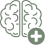

Recupere sua saúde mental, emocional e viva com equilíbrio absoluto todos os dias
Veja na prática como o Método S.M.I (Saúde Mental Integral), uma nova abordagem que integra psiquiatria, psicologia e neuropsicologia para tratar a raiz do seu problema

 Toque aqui para falar com nossa equipe no WhatsApp
Toque aqui para falar com nossa equipe no WhatsApp
Conheça a Cisme
Na CISME, acreditamos que o caminho para uma vida equilibrada e plena começa com uma abordagem integrada e multidisciplinar.
Combinando o melhor da: Psiquiatria - Psicologia - Neuropsicologia Ajudamos você a enfrentar e superar desafios emocionais de forma eficaz e duradoura.
Nossa missão é transformar vidas, uma pessoa de cada vez, oferecendo um tratamento que vai além dos sintomas e realmente trata a causa raiz dos problemas.
Na Cisme, você é o centro do tratamento!
Imagine finalmente sentir a tranquilidade e o equilíbrio que você sempre buscou, sabendo que está no comando do seu bem-estar.
Você não apenas participa ativamente do seu processo de cura, mas também retoma o controle sobre sua vida emocional.
Nossa abordagem é personalizada e garante que suas necessidades sejam priorizadas em cada etapa.
E isso tudo é possível através da Metodologia da Cisme: Método S.M.I!
A nossa metodologia é o coração da abordagem da CISME e foi criado para proporcionar uma transformação verdadeira e duradoura
Este método é baseado em três pilares essenciais que, juntos, ajudam você a enfrentar e superar os desafios emocionais de forma eficaz
Tudo começa com uma avaliação profunda e personalizada, onde entendemos suas necessidades específicas.Através de conversas detalhadas e ferramentas de avaliação, nossos especialistas identificam não apenas os sintomas, mas também as causas ocultas dos seus problemas emocionais.
Isso nos permite criar um plano de tratamento que realmente faz sentido para você.
O que diferencia o Método Saúde Integral é a combinação de três áreas: psiquiatria, psicologia e neuropsicologia. Em vez de abordar apenas um aspecto do seu bem-estar, tratamos sua saúde mental de forma completa.
Nossos profissionais trabalham em conjunto para garantir que todos os lados da sua vida emocional sejam atendidos, desde o equilíbrio químico no cérebro até as questões emocionais mais profundas.
Sabemos que a transformação verdadeira não acontece da noite para o dia. Por isso, o terceiro pilar do nosso método é o acompanhamento contínuo. Durante todo o tratamento, nossos especialistas estão ao seu lado, ajustando o plano conforme necessário e garantindo que você esteja no caminho certo para alcançar seus objetivos emocionais e de vida.
Toque aqui para falar com nossa equipe no WhatsApp
A CISME é ideal para pessoas que já tentaram de tudo - desde terapias tradicionais, meditação até livros de autoajuda - mas ainda sente que algo está faltando.
Se você é ou conhece uma pessoa que valoriza a saúde mental e busca uma transformação profunda e duradoura, nossa abordagem é para você.
A CISME é especialmente indicada para
A Sua Jornada Dentro da Cisme
1° passo: Avaliação Inicial
- Realização de uma avaliação completa para entender suas necessidades emocionais.
- Identificação das causas raiz de seus desafios através de um processo detalhado.
2° passo: Plano de Tratamento Personalizado
- Criação de um plano de tratamento integrado, combinando psiquiatria, psicologia e neuropsicologia.
- Ajuste contínuo do plano para atender às suas necessidades específicas e evolução ao longo do tempo.
3° passo: Acompanhamento e Suporte Constante
- Sessões regulares e contato direto com nossa equipe de especialistas.
- Monitoramento contínuo do seu progresso, com adaptações conforme necessário.
- Garantia de que você está no caminho certo para alcançar equilíbrio e paz emocional.
4° passo: Transformação e Equilíbrio
- Ao longo da sua jornada, você experimentará uma mudança real e duradoura.
- Nossa equipe estará ao seu lado a cada passo, garantindo que você alcance seus objetivos emocionais.
Você não precisa resolver tudo sozinho, estamos aqui para isso... No seu dia a dia, estar junto com a CISME significa ter uma equipe de especialistas sempre disponível para você. Imagine que, após uma avaliação detalhada, você recebe um plano de tratamento que inclui sessões regulares
com um psicólogo, consultas com um psiquiatra para ajustar qualquer medicação, e testes neuropsicológicos que ajudam a entender melhor como seu cérebro está funcionando. Esses três pilares funcionam juntos para garantir que cada aspecto da sua saúde mental seja tratado de forma integrada.
Toque aqui para falar com nossa equipe no WhatsApp
- 1. O que é o Método Saúde Mental Integral?
- O Método Saúde Mental Integral é uma abordagem terapêutica que integra psiquiatria, psicologia e neuropsicologia para tratar a raiz dos problemas emocionais, promovendo uma recuperação profunda e duradoura.
- 2. Como a CISME é diferente de outras clínicas?
- A CISME se diferencia por sua abordagem integrada e personalizada. Não tratamos apenas os sintomas; identificamos e resolvemos a causa raiz dos problemas emocionais, oferecendo uma solução completa e eficaz.
- 3. Quanto tempo dura o tratamento?
- A duração do tratamento varia de acordo com as necessidades de cada paciente. Após a avaliação inicial, nossos especialistas criarão um plano de tratamento personalizado para você.
- 4. Preciso de um encaminhamento para iniciar o tratamento?
- Não. Você pode entrar em contato diretamente com nossa equipe através do WhatsApp para agendar sua avaliação inicial.
- O tratamento é coberto por planos de saúde?
- Entre em contato com nossa equipe para verificar a cobertura do seu plano de saúde e as opções de pagamento disponíveis.